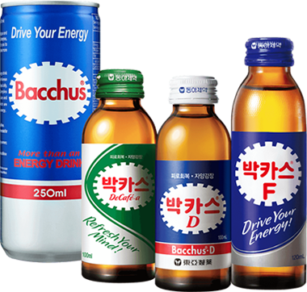

베스트제품
best product
박카스 스토리
우리가 만들고 제공하는 모든 제품은 국민 건강에 이바지해야 한다.-창업주 동호(東湖) 강중희 회장
오랜 식민 지배와 한국전쟁을 겪은 후 국민들의 건강상태는 매우 좋지 않았습니다. OECD 통계에 따르면 당시 국민의 평균수명은 53.7세에 불과했습니다. 같은 시기 OECD 25개국의 평균수명이 70.5세임을 감안하면 국민의 건강상태가 얼마나 좋지 못했는지 알 수 있습니다. 동아제약은 허약해진 국민들을 위해 1961년 피로회복제 ‘박카스’를 출시하였습니다.
처음에는 알약 형태의 ‘정제(錠劑)’로 출시하였으나 당시 제제(製劑)기술 미숙으로 당의정(糖衣錠)이 녹아 내리는 문제가 발생하여 반품이 속출하였습니다. 모든 임직원이 ‘이번에는 반드시 되게 한다’는 일념으로 연구개발은 물론 고객의 사용 환경에 적합한 제형 개발에 전념하였습니다.
또한 직원들의 사전 시음 결과를 반영하여 다수의 입맛에 적합한 맛과 향을 선별하여 속효성과 청량감을 강화하였습니다. 강신호 회장을 포함한 모든 임직원들은 소비자의 요구와 편의를 최우선으로 하여, 건강과 맛을 동시에 갖춘 자양강장제를 만들고자 연구개발을 게을리하지 않았습니다.
그리고 1963년, 멈추지 않는 도전으로 드링크제 형태의 ‘박카스 D’를 출시하게 되었습니다. 이후 적극적인 마케팅과 혁신적인 영업 전략으로 매우 빠르게 성장하며, 1967년 동아제약은 제약업계 정상에 우뚝 서게 되었습니다.